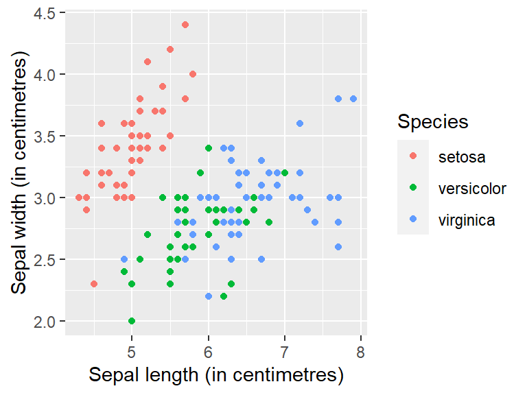
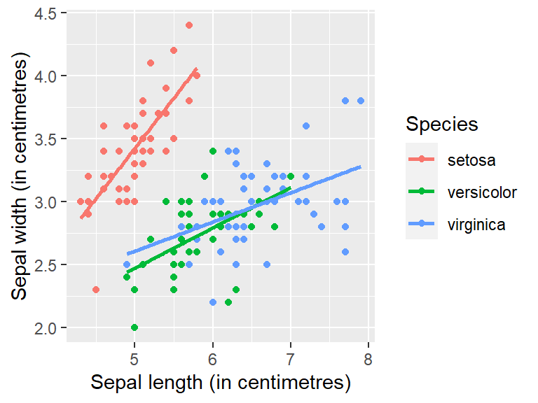
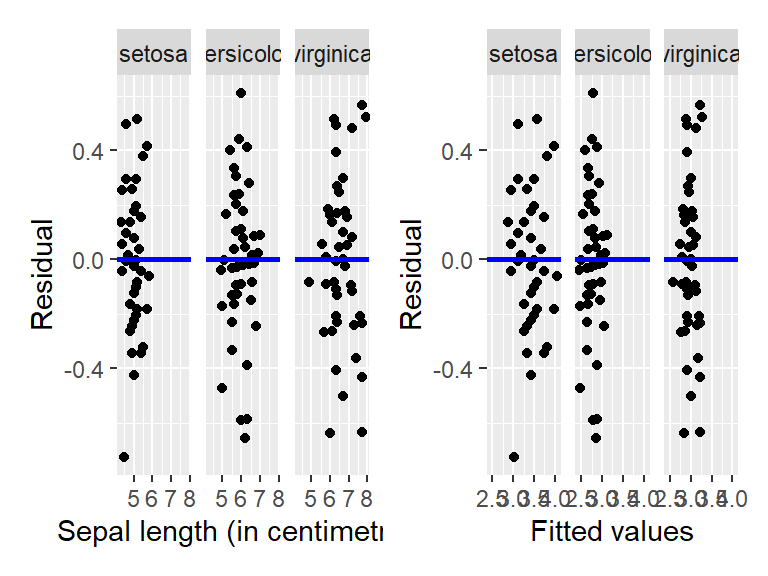

| Species | Width | Length | ||||
|---|---|---|---|---|---|---|
| Mean | Median | Std.Dev | Mean | Median | Std.Dev | |
| setosa | 3.43 | 3.40 | 0.38 | 5.01 | 5.00 | 0.35 |
| versicolor | 2.77 | 2.80 | 0.31 | 5.94 | 5.90 | 0.52 |
| virginica | 2.97 | 3.00 | 0.32 | 6.59 | 6.50 | 0.64 |
Data Analysis: Example Report
1 Introduction
There are hundreds of species of flowering plants, with one such genus known as the iris. Edgar Anderson procured measurements (in centimetres) from 150 different flowers from three different iris species (Anderson 1936) . The measurements are on the petal length and width, and sepal length and width from each flower. The three different iris species are the setosa, versicolor, and virginica. Here, we shall analyse the relationship between sepal width and sepal length and see whether the relationship, if any, is different across the three species of iris.
Section 2 consists of an exploratory analysis of the iris data and explores the potential relationship between sepal width and length, and whether there are any differences between the three species of the iris genus. Section 3 contains the results from fitting a multiple regression model to the data, as well as the assessment of the model assumptions. Concluding remarks are given in Section 4 .
2 Exploratory data analysis
Table 1 displays the mean, median and standard deviation for sepal width and length for each of the three different species of iris. From Table 1, we can see that the sepal length is, on average, greater than sepal width. The species v. setosa has the shortest, on average, sepal length, followed by v. versicolor and then v. virginica with the longest average petal length. However, the species setosa has the largest, on average, sepal width, followed by v. virginica and v. versicolor, respectively. From the standard deviation, the variability in sepal width is relatively similar for each species, however, there is more variability in sepal length, with the standard deviation for the species v. virginica almost twice that of the species v. setosa.
Table 2 displays the correlation between sepal width and length for each species of iris. Here, we can see that there is strong positive correlation between sepal width and length for the species setosa (0.743), while there is moderate and weak positive correlation for the species versicolor (0.526) and virginica (0.457), respectively.
| Species | Correlation |
|---|---|
| setosa | 0.74 |
| versicolor | 0.53 |
| virginica | 0.46 |
Figure 1 displays the relationship between sepal width and length by species. As sepal length increases, sepal width tends to increase, that is, there appears to be a positive linear relationship. Sepal length tends to be greater for the species virginica, followed by versicolor, with setosa tending to have the shortest sepal length. However, the setosa species tends to have longer sepal width, with setosa in a clear ‘cluster’ on its own.

3 Formal data analysis
We start by fitting the full multiple regression model containing all explanatory variables and separate regression lines for each species. The full model can be written as:
\[\begin{align} y_{i} &= \alpha + \beta_1 \cdot x_{1i} + \beta_2 \cdot x_{2i} + \beta_3 \cdot x_{1i} \cdot x_{2i} + \epsilon_i, ~~~~ \epsilon_i \sim N(0, \sigma^2), ~~~~ i=1,\ldots,150 \nonumber \\ &= \alpha + \beta_{\mbox{length}} \cdot \mbox{length} + \beta_{\mbox{species}} \cdot \mathbb{I}_{\mbox{species}}(x) + \beta_{\mbox{length, species}} \cdot \mbox{length} \cdot \mathbb{I}_{\mbox{species}}(x) + \epsilon_i, \nonumber \end{align}\]where
- \(\alpha\) is the intercept of the regression line for the baseline species (setosa);
- \(\beta_{\mbox{length}}\) is the slope of the regression line for the baseline species (setosa);
- \(\beta_{\mbox{species}}\) is the additional term added to \(\alpha\) to get the intercept of the regression line for the specified species;
- \(\beta_{\mbox{length, species}}\) is the additional term added to \(\beta_{\mbox{length}}\) to get the slope of the regression line for the specified species; and
- \(\mathbb{I}_{\mbox{species}}(x)\) is an indicator function indicating the chosen species.
Stepwise regression with backward selection will be used to determine whether the full model can be reduced based on the Akaike information criterion (AIC). Hence, the model which results in the lowest AIC will result in the final model fitted to the data. In this case, the final model detailed above with separate regression lines for each species provides the lowest AIC (-384.34). The regression coefficients from the model are displayed in Table 3.
| term | estimate | p_value |
|---|---|---|
| intercept | −0.57 | 0.31 |
| Sepal.Length | 0.80 | 0.00 |
| Species: versicolor | 1.44 | 0.04 |
| Species: virginica | 2.02 | 0.00 |
| Sepal.Length:Speciesversicolor | −0.48 | 0.00 |
| Sepal.Length:Speciesvirginica | −0.57 | 0.00 |
Hence, from Table 3 we obtain the following regression lines:
\[\begin{align} \widehat{\mbox{width}}_{\mbox{setosa}} &= -0.569 + 0.799 \cdot \mbox{length} \\\widehat{\mbox{width}}_{\mbox{versicolor}} &= 0.873 + 0.32 \cdot \mbox{length} \\\widehat{\mbox{width}}_{\mbox{virginica}} &= 1.447 + 0.232 \cdot \mbox{length} \end{align}\]That is, the relationship between sepal width and sepal length differs by species. For example, for the species setosa, sepal width increases, on average, by 0.799 for every one unit increase in sepal length. Hence, sepal width increases quicker with length than it does for the other two species (0.32 and 0.232, respectively). The separate regression lines for each species are displayed in Figure 2 .

Figure 3 displays the residuals versus sepal length and the fitted values for each species, respectively. The assumptions of the residuals having mean zero and constant variance across all values of the explanatory variable (sepal length), as well as the fitted values, appear to hold. This is observed from the even scatter of points above and below the zero line indicating the residuals have mean zero. The scattering of the points is also constant across all values of sepal length with no systematic pattern observed in the residuals.

Figure 4 displays histograms of the residuals by species. Here we can see that the residuals appear to be bell-shaped and centred at zero. Hence, the assumption of having normally distributed residuals with mean zero appears to be valid.

4 Conclusions
Sepal width and sepal length are positively related, with sepal width increasing with increasing sepal length. This relationship was found to be different by species, with separate regression lines having to be fitted by species. The species setosa has a stronger relationship between sepal width and length, where sepal width increases, on average, by 0.799 with every one unit increase in length. In comparison, the species versicolor and virginica have a more similar relationship, with sepal width increasing, on average, by 0.32 and 0.232, respectively, with every one unit increase in sepal length.
5 References
Anderson, Edgar. 1936. “The Species Problem in Iris.” Annals of the Missouri Botanical Garden 23 (3): 457. https://doi.org/10.2307/2394164.